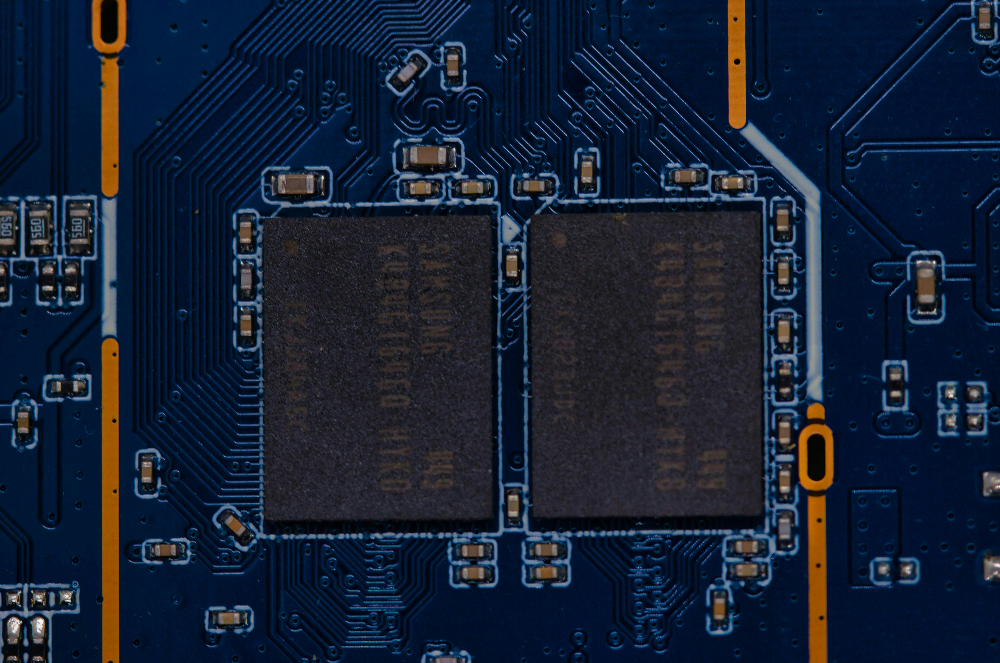
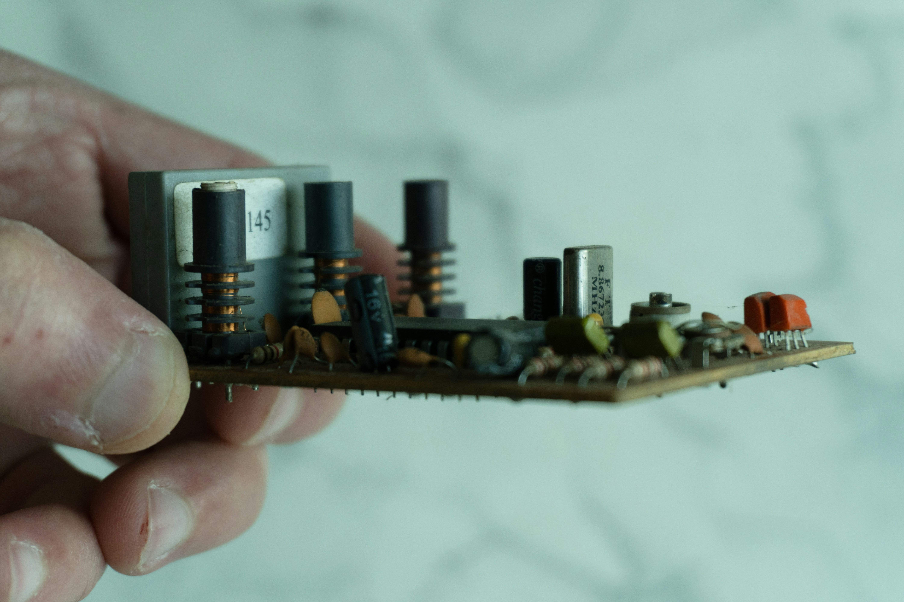

SIPL enables the development and deployment of indigenous defence and strategic electronics — through partnerships, subsystem integration, commercialization support, and deployment readiness across sensing, monitoring, and mission-critical systems.
Defence and strategic electronics demand more than good engineering — they demand a partner who can align research, industry, and production toward a deployable outcome. SIPL provides that connective capability.

Connecting research institutions, OEMs, and strategic stakeholders around a shared technology roadmap.
Bringing sensors, electronics, and control systems together into qualified, mission-ready subsystems.

Structuring the transfer, licensing, and manufacturing pathway that gets a validated technology into supply.

Qualifying, ruggedizing, and certifying systems so they arrive field-ready, not just lab-proven.
SIPL's enablement model applies across sensing, monitoring, industrial, aerospace-adjacent, and defence-adjacent electronics — domains where indigenous capability has direct strategic value.

Enabling indigenous sensing technologies from validation through to integrated, field-deployable systems.

Supporting the integration of continuous monitoring and situational-awareness platforms for strategic use.
Enabling ruggedized industrial and embedded electronics that meet strategic-grade reliability requirements.

Supporting electronics and subsystems engineered to aerospace-grade qualification and reliability standards.

Enabling indigenous electronics and subsystems that support strategic and defence-adjacent capability needs.

Coordinating qualification, testing, and certification support across every domain above.
Strategic electronics carry a higher bar than commercial products. SIPL applies a deployment-readiness framework that closes the gap between a working prototype and a system trusted in the field.
Institutions developing sensing, electronics, and strategic technologies ready for structured commercialization.
Industry partners building platforms that require qualified, integration-ready subsystems.
Manufacturers with the process and scale to take qualified electronics into repeatable production.
Institutions and organizations that ultimately field and operate the deployed capability.
Deep experience bringing sensors, electronics, and control systems together into qualified subsystems.
From technology evaluation through certification to manufacturing scale-up and deployment handover.
A consistent focus on strengthening India's domestic supply base and reducing import dependency.
DPIIT-recognized, with a credible track record of connecting research, industry, and deployment.
Whether you're developing sensing technology, building an integrated platform, or scaling production of strategic electronics — SIPL is ready to enable the next step.